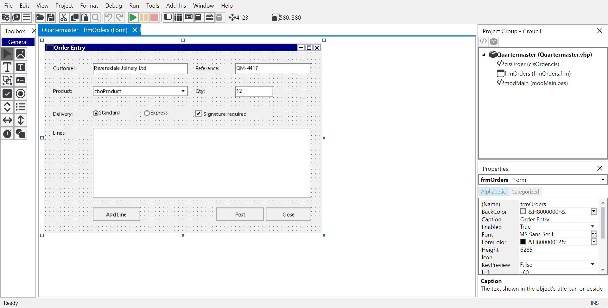
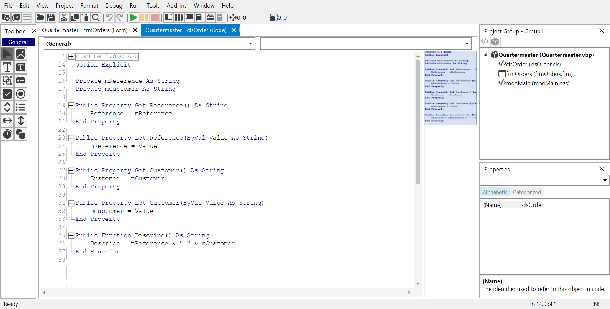
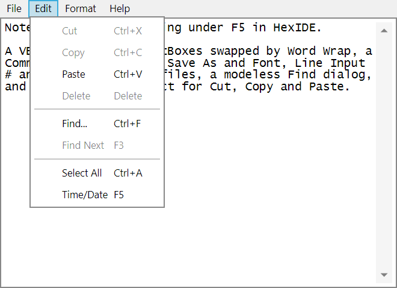
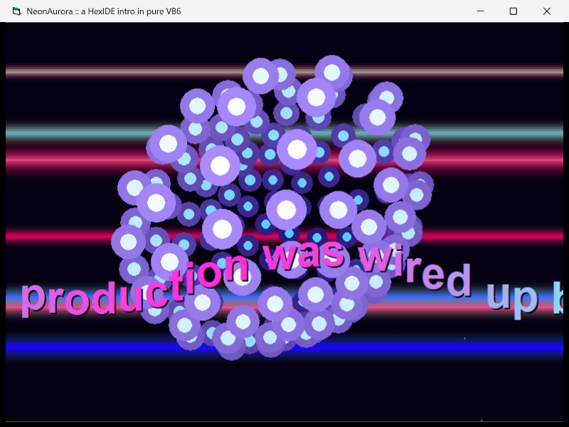
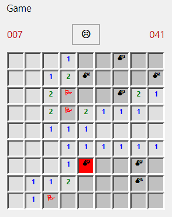
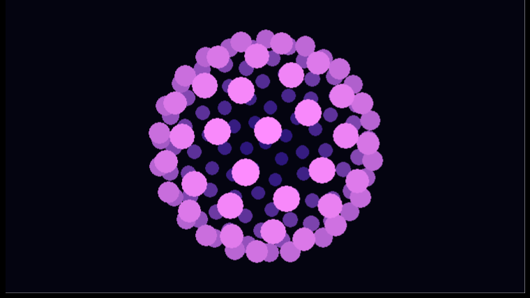
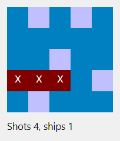

Your favourite IDE, reinvented in the open.
A cross-platform recreation of the Visual Basic 6 workbench: forms, toolbox, properties, project explorer and the debugger, running natively on Windows, macOS and Linux. It opens your VB6 projects as they are, runs them under F5, and saves them back the way VB6 writes them.
Free and MIT licensed. macOS, Linux and the installer.
Workbench
Language
Project

The designer, project explorer and properties window, where your hands expect them.

The code window keeps both VB6 combos. Line numbers, folding and a minimap are the new part.

notepad-forms, running under F5: two forms, a CommonDialog, file I/O and the Clipboard.

NeonAurora: per-pixel plasma, glenz vectors and a MIDI chiptune. Written in VB6, compiled by VB6.
Where it stands
What works, what's partial, and what isn't there yet.
Alpha means this list is still moving, and every release updates it. The long version, with each gap named, is on the Scope page.
Works
- The workbenchDesigner, toolbox, properties, project explorer and menu editor.
- Saving VB6 projectsVB6's own 22 template forms and its
.vbpfiles round-trip byte for byte. - The debuggerBreakpoints, stepping, Locals, Watches, Call Stack and Immediate.
- Language serversAttach any LSP server, and read the conversation in the Protocol Inspector.
Partial
- The interpreter577 of the language's 1,184 names run in full and 435 in part. Typical form programs run.
- ControlsSome properties are ignored, such as a TextBox's
MaxLengthandPasswordChar. - Make EXEA made program stops silently on a run-time error.
- Object Browser and FindBoth work in part, and Find has no project scope.
Not yet
- Third-party controls at run timeTheir forms open and save, but F5 refuses them.
- Windows API and COM
Declarecalls,CreateObjectand type libraries. - MDI forms and printing
- Autosave and crash recovery
By design
- No native compilerOn Windows, HexIDE drives VB6's own.
- No whole-program analysisThat belongs to a real language engine, behind a replaceable seam.
- Classic dialects onlyThe language as Microsoft shipped it.
News
A release every Monday.
Each one gets a post here: what changed, what to watch for, and what is still missing.
-
Release
HexIDE 0.3.0: every template form saves, and F5 runs real programs
About 460 changes in a month. File I/O, Collection and several forms in the interpreter; Make EXE builds a self-contained program; a Windows installer; and from here, a release every week.
-
Release
HexIDE 0.2.0: forms saved the way VB6 writes them
21 of the 22 template forms round-trip, any language server can be attached, and the Protocol Inspector arrives.
-
Release
HexIDE 0.1.0: the first public build
The workbench, the interpreter and the debugger, on Windows, macOS and Linux.
Muscle memory
The keys still do what your hands know.
Every window is where you expect it. Prefer another IDE's keys? A keymap pack swaps them.
Built with it
Nine small programs, all plain VB6.
Three demoscene intros, built by agents driving the running IDE through its automation tools. Three ordinary form programs that run under F5 and build with the real compiler. And three that exist to be checked rather than watched.
neon-auroraIntro
A six-part Amiga-style intro: plasma, copper bars, starfield, glenz vector, vector balls and a sine-scroller, with MIDI music.
notepad-formsProgram
Windows' Notepad on forms: a CommonDialog, Line Input #, a modeless Find dialog and the Clipboard.

minesweeper-formsProgram
A Label field loaded at run time, right-click flags, a recursive flood fill and a Timer clock.

neon-vertigoIntro
130 vector balls on a Fibonacci lattice, spun on two axes and painted back to front.

battleship-formsProgram
The Battleship engine played on forms: a modal setup dialog, a Label grid and WithEvents.
battleshipCheck
The same trace, line for line, on this interpreter and from a native build by the real compiler.
Get it
Download HexIDE 0.3.0
Alpha: work on a copy of your project. Nothing is code-signed yet, so Windows shows a SmartScreen warning (More info, then Run anyway). On macOS, extract in Terminal, because Finder applies a quarantine flag an unsigned app cannot clear.
Windows
Installer, x64Installs for all users, .NET included. Or the zip, nothing to install:
x64 or
arm64.
Every build is on the release page, including smaller ones for a machine that already has the .NET 10 Runtime. Or build it from source.